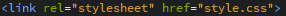

Основные тэги и подключение файла
Конечно css также имеет большое количество различных команд, без которых не обойтись, но это не более сложно чем html.
И так создаём документ точно так же как и документ html, только при сохранении указать имя, а вместо .html вписать .css, и так же выбрать все файлы. В результате получится такой файл .
Теперь, созданный файл css нужно прикрепить к основному файлу html для того чтобы он считывал и принимал все данные из css файла.
Прикрепляется этот файл прописывая тэг в head файла html .
В готовом файле формата css можно писать значения, и теперь они будут применяться для нужных блоков.
У css есть несколько типов вводимых тэгов:
Селектор - тэг html, для которого задаётся тип его изменения.
Свойство, и его значение.
Для одного селектора может задаваться много различных свойств, каждое из которых пишется через двоечточие со значением, а с другими свойствами - через точку с запятой.
Селекторы в css делятся на виды:На мой взгялд наиболее удобным считаю оформлять отдельные блоки по тэгам, а информацию в нутри них,то есть внутренние блоки оформлять по id.